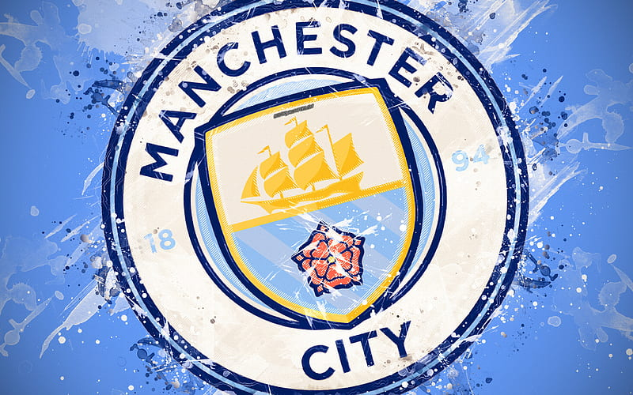

Notícias do Liverpool
Atualizado 20 de Fevereiro 2024
Donec felis ipsum, tempus a ante imperdiet, tempus congue orci. Nullam eleifend leo vel turpis tincidunt, quis euismod orci condimentum. Cras id augue ut ante rhoncus aliquet eget nec dui. Vestibulum ante ipsum primis in faucibus orci luctus et ultrices posuere cubilia curae; Ut ipsum enim, porta venenatis aliquam non, iaculis a erat. Mauris et mollis lacus. Pellentesque habitant morbi tristique senectus et netus et malesuada fames ac turpis egestas. Fusce dapibus egestas suscipit. Suspendisse at tortor ac felis tristique dictum id at augue. Mauris tincidunt, lacus non iaculis consectetur, quam tellus dignissim mauris, id consequat mauris mauris et erat. Mauris pretium tincidunt neque, vitae vehicula justo aliquet vel.
Leia maisNotícias do Chelsea
Atualizado 20 de Fevereiro 2024Donec felis ipsum, tempus a ante imperdiet, tempus congue orci. Nullam eleifend leo vel turpis tincidunt, quis euismod orci condimentum. Cras id augue ut ante rhoncus aliquet eget nec dui. Vestibulum ante ipsum primis in faucibus orci luctus et ultrices posuere cubilia curae; Ut ipsum enim, porta venenatis aliquam non, iaculis a erat. Mauris et mollis lacus. Pellentesque habitant morbi tristique senectus et netus et malesuada fames ac turpis egestas. Fusce dapibus egestas suscipit. Suspendisse at tortor ac felis tristique dictum id at augue. Mauris tincidunt, lacus non iaculis consectetur, quam tellus dignissim mauris, id consequat mauris mauris et erat. Mauris pretium tincidunt neque, vitae vehicula justo aliquet vel.
Leia maisNotícias do Arsenal
Atualizado 20 de Fevereiro 2024Donec felis ipsum, tempus a ante imperdiet, tempus congue orci. Nullam eleifend leo vel turpis tincidunt, quis euismod orci condimentum. Cras id augue ut ante rhoncus aliquet eget nec dui. Vestibulum ante ipsum primis in faucibus orci luctus et ultrices posuere cubilia curae; Ut ipsum enim, porta venenatis aliquam non, iaculis a erat. Mauris et mollis lacus. Pellentesque habitant morbi tristique senectus et netus et malesuada fames ac turpis egestas. Fusce dapibus egestas suscipit. Suspendisse at tortor ac felis tristique dictum id at augue. Mauris tincidunt, lacus non iaculis consectetur, quam tellus dignissim mauris, id consequat mauris mauris et erat. Mauris pretium tincidunt neque, vitae vehicula justo aliquet vel.
Leia maisNotícias do City
Atualizado 20 de Fevereiro 2024 Donec felis ipsum, tempus a ante imperdiet, tempus congue orci. Nullam eleifend leo vel turpis tincidunt, quis euismod orci condimentum. Cras id augue ut ante rhoncus aliquet eget nec dui. Vestibulum ante ipsum primis in faucibus orci luctus et ultrices posuere cubilia curae; Ut ipsum enim, porta venenatis aliquam non, iaculis a erat. Mauris et mollis lacus. Pellentesque habitant morbi tristique senectus et netus et malesuada fames ac turpis egestas. Fusce dapibus egestas suscipit. Suspendisse at tortor ac felis tristique dictum id at augue. Mauris tincidunt, lacus non iaculis consectetur, quam tellus dignissim mauris, id consequat mauris mauris et erat. Mauris pretium tincidunt neque, vitae vehicula justo aliquet vel.
Leia mais